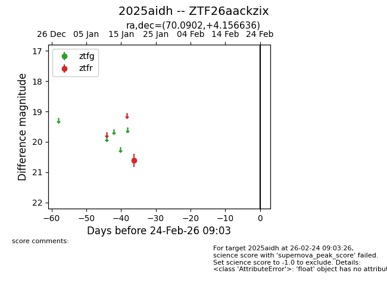
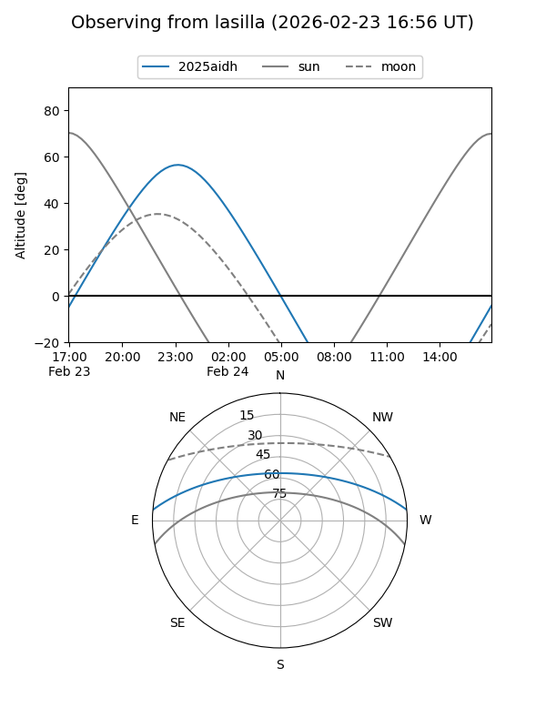

2025aidh
Target 2025aidh at 2026-01-19 05:15
Aliases and brokers:
FINK: link
Lasair: link
ALeRCE: link
TNS: link
YSE: link
alt names
ZTF26aackzix (ztf,fink_ztf)
2025aidh (tns,yse)
Coordinates:
equatorial (ra, dec) = 70.0902,+4.15664
equatorial (HMS+DMS) = 04:40:21.66,+04:09:23.89
galactic (l, b) = (192.6055,-26.57659)
Flags:
Photometry:
last ztfr=20.61
1 ztfr detections
Lightcurve

Visibility


Additional plots